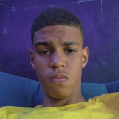

PAGINA INICIAL
Conhecendo o Mundo Através dos Olhos de Julio - Blog de um Jovem de 15 Anos

REDES SOCIAIS
Olá, queridos leitores! Sejam bem-vindos ao meu cantinho virtual.Me chamo Julio,
tenho 15 anos, e estou super animadoem compartilhar um pouco do meu mundo com vocês.Este é o meu espaço,onde pretendo
contar histórias, compartilhar experiências e expressar minhas paixões.
✧Sobre Mim
Nasci com a curiosidade correndo nas veias e sempre fui fascinado pelo poder das palavras. Este blog
é a minha maneira de explorar o universo digital e dividir minhas descobertas com cada um de vocês.
Tenho 15 anos, mas a sede por conhecimento é atemporal.
✧O Que Esperar
Aqui, você encontrará um mix de assuntos que me inspiram e fazem parte do meu dia a dia. Desde
aventuras cotidianas até reflexões sobre o mundo ao meu redor, prometo trazer um conteúdo autêntico e
verdadeiro. Vocês são parte fundamental dessa jornada, e mal posso esperar para trocar ideias e
opiniões com cada um.
✧Paixões e Interesses
Amo explorar novas tecnologias, descobrir músicas incríveis, devorar livros de todos os gêneros, me perder em mundos fictícios e,
claro, mergulhar no universo da programação. A lógica e a criatividade dessa arte me fascinam, e aqui, pretendo compartilhar minhas
experiências nesse incrível mundo do código.
✧Programação e Outras Descobertas
Se vocês também têm interesse em programação, preparem-se para mergulhar em tutoriais, projetos pessoais e reflexões sobre a
influência da tecnologia em nossas vidas. Além disso, pretendo compartilhar descobertas culturais, dicas de organização e tudo mais que
torna a vida ainda mais emocionante.

✧Junte-se a Mim
Este blog não é apenas sobre mim; é sobre todos nós. Convido cada um de vocês a fazerem parte dessa comunidade Deixem comentários,
compartilhem suas próprias experiências e sugestões. Vamos construir um espaço acolhedor e inspirador juntos.
✧Fiquem à vontade para explorar as diferentes seções do blog.Espero que se
divirtam tanto quanto eu.Obrigado por embarcarem nessa aventura comigo!
ATÉ BREVE,JULIO
 INSTAGRAM
INSTAGRAM
 GITHUB
GITHUB